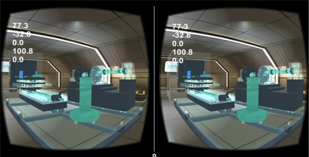

Business Analyst Intern @IBM, Shanghai, China
Client: SAIC Volkswagen (SVW)
Jun. 2017 – Aug. 2017
• Assisted product manager to manage SVW B2B2C E-commerce development team with 20+ people based on agile development methodology
• Facilitated weekly meetings with clients to analyze requirements and explore potential solutions
• Drafted and maintained product requirement documents (PRD), and align them with tangible deliverables such as user stories, user journey map, Axure prototype, functional specifications and technical requirements
• Launched SVW E-commerce website (alpha version) in two months before client’s deadline
Project: INFORMS Challenge: Dynamic Pricing under Competition
Mar. 2017 – May 2017
• Coded Python module learning in a competitive environment competing for revenue with fellow participants
• Applied EM algorithm to mixed multinomial logit model, used sorted SAA to estimate competitors’ prices
• Beat 90% competitors and kept stable revenue over iterations
Application Intern @Jennison Associates LLC, New York
Oct. 2016 – Feb. 2017
• Created and executed automated test plans, cases and scripts to uncover, identify and document company ERP system's problems and their causes
• Conducted different levels of testing including unit, functional, and user acceptance
• Eliminated 90% manual test time, minimized the possibility of human error during testing
Capstone Design: Pocket Lab – Remote VR Monitoring
Client: Siemens, Shanghai, China
May 2016 – Aug. 2016
• Built a remote lab monitoring system using virtual reality and IoT technology
• Developed Python-based back-end cloud server processing data with Ubuntu, MySQL and web service
• Created Django-based website visualizing real-time data by presenting HTML5 dashboard
• Won Gold Award (top ranked) out of 30+ teams
Capstone Design: Dealership Ordering Optimization
Client: Urban Science, Detroit, Michigan
Jan. 2016 – Apr. 2016
• Developed linear programming algorithm in Python suggesting optimal inventory level for dealers
• Derived key parameters in vehicle selling, conducted regression analysis to predict sales and lead time
• Increased $60K annual profit per dealer in simulation
Research Assistant @University of Michigan Transportation Research Institute, Ann Arbor, MI
May 2015 – Aug. 2015
• Programmed Python web scraper automating readability assessment for technical documents
• Analyzed score inconsistency among different tools, investigated in detailed implementation difference
• Published a quantitative research paper as first author in journal IEEE TPC: http://ieeexplore.ieee.org/document/7839917/?reload=true